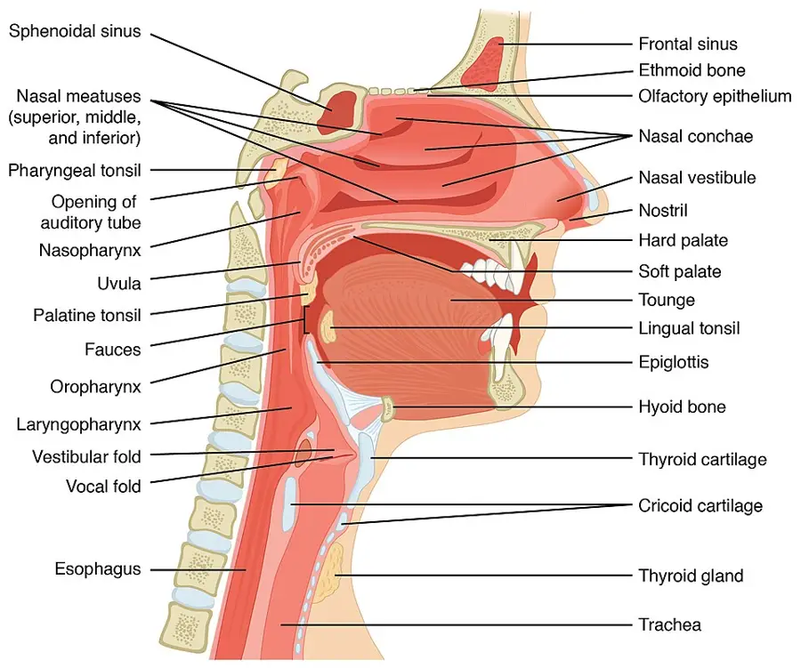

Écoulement nasal — S1.14
DX.4 — Rhinosinusite aiguë postvirale
La rhinosinusite aiguë postvirale prolonge un rhume au-delà de dix jours, ou l’aggrave après cinq jours, sans devenir bactérienne dans la grande majorité des casS4S1. Le médecin la reconnaît sans examen, exclut les drapeaux rouges, compte les critères bactériens et prescrit selon l’information professionnelle suisse (AIPS) des soins symptomatiques sans antibiotiqueS1S4S2.
Le cours DX.4 repose sur les sources citées et n’a pas été validé cliniquement par un médecin.
1. Définition
L’EPOS (European Position Paper on Rhinosinusitis and Nasal Polyps) définit la rhinosinusite aiguë de l’adulte par au moins deux symptômes d’apparition brutaleS4.
L’un de ces symptômes doit être une obstruction nasale ou un écoulement nasal, antérieur ou postérieurS4.
La forme postvirale répond à cette définition lorsque les symptômes s’aggravent après le cinquième jour ou persistent au-delà de dix jours, tout en durant moins de douze semainesS4.
2. Épidémiologie (Suisse, puis Europe)
En Suisse, l’Institut bernois de médecine de famille (BIHAM) évalue la prévalence de la rhinosinusite aiguë entre 6 et 15 %, soit environ un adulte sur huitS1.
Cette affection occupe, selon le BIHAM, le cinquième rang des diagnostics qui conduisent à une prescription d’antibiotiques, ce qui en fait une cible prioritaire de bon usageS1.
Les épisodes viraux reviennent de 2 à 5 fois par personne et par an, si bien que la forme postvirale représente une étape fréquente de ce parcoursS1.
Les Hôpitaux universitaires de Genève (HUG) rappellent que la rhinosinusite aiguë survient dans le contexte d’un rhume et que son origine reste majoritairement viraleS3.
En Europe, l’EPOS cite une enquête néerlandaise qui retrouve des symptômes évocateurs de forme postvirale chez 18 % des personnes interrogées dans trois villesS4.
La surinfection bactérienne ne touche que 0,5 à 2 % des rhinosinusites virales de l’adulte, alors qu’elle atteint 5 à 13 % chez l’enfantS1S4.
La fenêtre terrain, fréquence et poids rassemble les chiffres utiles au rang 3 de la liste et les facteurs qui favorisent l’épisode.
Terrain, fréquence et poids de la rhinosinusite aiguë postvirale
Le tableau classe les données d’abord suisses, puis européennes ; chaque ligne porte la source qui la justifie.
| Donnée | Valeur | Portée pratique | Source |
|---|---|---|---|
| Prévalence de la rhinosinusite aiguë | 6 à 15 % de la population, environ un adulte sur huit | Le chiffre explique le rang 3 de ce diagnostic dans la liste du lot. | S1 |
| Rang parmi les motifs d’antibiotiques | Cinquième diagnostic | Chaque prescription évitée réduit la pression de sélection des résistances. | S1 |
| Épisodes viraux | 2 à 5 par personne et par an | La forme postvirale prolonge une partie de ces épisodes au-delà de dix jours. | S1 |
| Symptômes évocateurs de forme postvirale | 18 % (17 à 21 %) dans une enquête néerlandaise | La donnée est européenne, faute de chiffre suisse propre à la forme postvirale. | S4 |
| Surinfection bactérienne | 0,5 à 2 % chez l’adulte ; 5 à 13 % chez l’enfant | La forme postvirale ne justifie donc presque jamais un antibiotique d’emblée. | S1 |
| Complications graves | De 3 par million et par an jusqu’à 1 sur 32 000 adultes | Leur rareté impose une recherche active des drapeaux rouges plutôt qu’un traitement systématique. | S1 |
| Tabagisme actif ou passif | Facteur favorisant documenté | L’arrêt du tabac fait partie du conseil après l’épisode. | S4 |
| Allergie et reflux gastro-œsophagien | Pas de rôle favorisant démontré | Le médecin ne les recherche pas pour expliquer un épisode isolé. | S4 |
| Maladie chronique après une grippe | Indice d’un risque accru | Le médecin en tient compte chez le patient polymorbide. | S4 |
| Anomalies anatomiques | Indice d’un rôle dans les formes récidivantes | Elles motivent l’avis d’oto-rhino-laryngologie (ORL) lorsque les épisodes se répètent. | S4 |
La rhinosinusite chronique, qui touche jusqu’à 15 % de la population selon les HUG, n’entre pas dans ce rang, car sa durée dépasse douze semainesS3S4.
3. Physiopathologie
Selon le BIHAM, un virus cause 98 à 99,5 % des rhinosinusites aiguës, et le rhinovirus en explique à lui seul la moitiéS1.
Les adénovirus, les coronavirus, y compris le SARS-CoV-2 (coronavirus du syndrome respiratoire aigu sévère 2), et les virus grippaux complètent ce spectre viralS1.
Pour l’EPOS, l’épithélium nasal sert de porte d’entrée aux virus respiratoires et participe activement à la première réponse de l’hôteS4.
La cascade inflammatoire provoque ensuite œdème, congestion, extravasation de liquide, production de mucus et obstruction des sinus, ce qui entretient les symptômes après la phase viraleS4.
La fenêtre sinus, ostiums et territoires douloureux relie chaque sinus à la douleur qu’il produit et au signe qui inquiète.
La fenêtre voies de drainage et écoulement postérieur montre pourquoi le mucus descend dans la gorge et provoque la toux.
Sinus, ostiums et territoires douloureux
Sinus enflammés au cours d’une rhinosinusite : Blausen Medical a dessiné cette planche en couleurs et la publie sous licence CC BY 3.0S5.

Le lecteur repère d’abord, sans aide, les quatre territoires colorés, puis il cherche la zone rouge qui figure la muqueuse enflammée.
- 1. Le repère 1 montre le sinus frontal, dont l’atteinte donne une céphalée sus-orbitaire selon la Société suisse d’infectiologie (SSI)S5S2.
- 2. Au repère 2 figurent les cellules ethmoïdales, dont l’atteinte comble l’angle interne de l’œil et provoque un œdème palpébralS5S2.
- 3. Au repère 3 figure le sinus maxillaire, dont la douleur sous-orbitaire s’accentue quand la tête se penche en avantS5S2.
- 4. Le repère 4 montre le sinus sphénoïdal, dont la céphalée rétro-orbitaire permanente irradie au vertex et peut simuler une hypertension intracrânienneS5S2.
Ce que l’image décide. Une douleur maxillaire qui augmente penché en avant reste compatible avec la forme postvirale, tandis qu’un œdème palpébral ou une céphalée sphénoïdale intense imposent un avis urgentS2S1.

| Sinus | Douleur typique | Signe d’alerte associé | Conduite | Source |
|---|---|---|---|---|
| Maxillaire | Douleur sous-orbitaire, parfois pulsatile, maximale en fin d’après-midi et la nuit | Douleur unilatérale avec origine dentaire possible | Le médecin examine les dents et sort du cadre de la mométasone si une origine dentaire est probable. | S2AIPS 54189 |
| Frontal | Céphalée sus-orbitaire | Gonflement du front | Le gonflement frontal impose un adressage immédiat. | S2S4 |
| Ethmoïdal | Comblement de l’angle interne de l’œil | Œdème ou érythème périorbitaire | Le médecin adresse sans délai, car l’orbite est menacée. | S2S4 |
| Sphénoïdal | Céphalée rétro-orbitaire permanente irradiant au vertex | Céphalée sévère, signes méningés ou neurologiques | Le médecin adresse immédiatement et demande une imagerie injectée en milieu spécialisé. | S2S4 |
Voies de drainage et écoulement postérieur
Fosse nasale, sinus et pharynx en coupe sagittale : OpenStax College a dessiné cette coupe en couleurs pour son manuel d’anatomie, publiée sous licence CC BY 3.0S6.

Le lecteur cherche d’abord les deux sinus colorés en rouge foncé, puis il suit les cornets et le pharynx vers le bas.
- 1. Le repère 1 montre le sinus frontal, situé au-dessus de la fosse nasale, dont l’atteinte donne la céphalée sus-orbitaireS6S2.
- 2. Le repère 2 montre le sinus sphénoïdal, dont l’ostium très postérieur explique l’écoulement purulent sur la paroi pharyngée postérieureS6S2.
- 3. Le repère 3 montre les cornets et les méats, où l’EPOS place l’œdème et la sécrétion mucopurulente visibles à l’endoscopieS6S4.
- 4. Le repère 4 montre le nasopharynx, où le mucus postérieur s’écoule avant de gagner la gorgeS6.
- 5. Le repère 5 montre l’oropharynx, où l’abaisse-langue révèle la sécrétion qui descend depuis un sinus postérieurS6S2.
Ce que l’image décide. Une sécrétion visible sur la paroi pharyngée postérieure confirme l’écoulement postérieur, mais elle ne prouve pas à elle seule une infection bactérienneS1S2.

| Mécanisme | Conséquence clinique | Ce que le traitement vise | Source |
|---|---|---|---|
| Œdème de la muqueuse et congestion | Nez bouché, pression faciale | Le décongestionnant soulage à court terme ; le corticoïde nasal réduit l’inflammation plus lentement. | S4S1 |
| Production de mucus et extravasation | Rhinorrhée antérieure et postérieure | Le rinçage salin aide à évacuer les sécrétions, avec un niveau de preuve très faible. | S4 |
| Obstruction des ostiums | Rétention dans les sinus et douleur localisée | La surveillance recherche une aggravation qui ferait évoquer une surinfection. | S4S2 |
| Atteinte de la fente olfactive | Baisse ou perte de l’odorat | Le médecin la note, car elle fait partie des symptômes définissant l’épisode. | S4S1 |
4. Démarche diagnostique
Le diagnostic de rhinosinusite aiguë reste clinique : il repose sur des symptômes d’apparition brutale, sans examen de laboratoire en l’absence de complicationS1.
Le médecin date d’abord le début des symptômes, car la forme postvirale ne se diagnostique pas avant dix jours, sauf aggravation nette après cinq joursS4.
Il recherche ensuite les drapeaux rouges orbitaires, méningés et neurologiques, puisque leur présence impose un adressage immédiat quel que soit le délaiS4S1.
Il compte enfin les critères de surinfection bactérienne, car trois critères sur cinq orientent vers la rhinosinusite aiguë bactérienne traitée dans le DX.5S4.
La fenêtre démarche en six étapes datées ordonne ces décisions, et la fenêtre diagnostics différentiels discriminants sépare le DX.4 de ses voisins.
Démarche diagnostique en six étapes datées
| Étape | Question | Seuil ou élément décisif | Conduite | Source |
|---|---|---|---|---|
| 1. Dater | Depuis quand les symptômes durent-ils ? | Moins de 10 jours sans aggravation : rhume viral (DX.1). | Le médecin propose un traitement symptomatique et l’autosoin. | S4S1 |
| 2. Reconnaître | Deux symptômes sont-ils présents, dont obstruction ou écoulement ? | Plus de 10 jours, ou aggravation après 5 jours, pendant moins de 12 semaines. | Le médecin retient la forme postvirale. | S4 |
| 3. Exclure l’urgence | Un signe orbitaire, méningé ou neurologique existe-t-il ? | Œdème périorbitaire, diplopie, baisse visuelle, raideur de nuque, signes neurologiques. | Le médecin adresse immédiatement en milieu spécialisé. | S4S1 |
| 4. Chercher la surinfection | Combien de critères bactériens sur cinq ? | Trois ou plus : écoulement coloré, douleur locale sévère, fièvre, protéine C réactive (CRP) élevée, double aggravation. | Le médecin bascule vers le DX.5 et discute l’antibiotique. | S4 |
| 5. Repérer le terrain | Le patient porte-t-il un facteur de risque de complication ? | Âge inférieur à 2 ans ou supérieur à 65 ans, immunodéficience, comorbidités multiples, hospitalisation récente. | Le médecin raccourcit le délai de réévaluation. | S1 |
| 6. Décider avec le patient | Quels bénéfices et quels risques le patient attend-il ? | Guérison spontanée de plus de 90 % à quatre semaines. | Le médecin partage la décision et planifie le contrôle. | S1 |
L’EPOS compte la CRP parmi ses critères ; le BIHAM ne la demande pourtant pas sans complication, et le cours suit cette règle suisseS4S1.
Diagnostics différentiels discriminants
| Diagnostic | Élément qui le distingue du DX.4 | Piège | Conduite | Source |
|---|---|---|---|---|
| DX.1 Rhinite virale aiguë | Durée inférieure à 10 jours sans aggravation secondaire | Un mucus coloré au quatrième jour ne signe pas une sinusite postvirale. | Le médecin traite les symptômes et revoit au-delà de dix jours. | S4S1 |
| DX.5 Rhinosinusite aiguë bactérienne | Au moins trois critères sur cinq, dont double aggravation ou fièvre | La purulence isolée ne suffit pas. | Le médecin applique le DX.5. | S4S1 |
| DX.2 Rhinite allergique | Éternuements, rhinorrhée aqueuse, prurit nasal et oculaire | L’EPOS demande d’interroger systématiquement sur ces symptômes allergiques. | Le médecin oriente vers le DX.2. | S4S1 |
| DX.6 et DX.7 Rhinosinusites chroniques | Durée de 12 semaines ou plus | Des épisodes aigus répétés ne font pas une forme chronique. | Le médecin bascule vers le DX.6 ou le DX.7. | S4S3 |
| DX.8 Corps étranger nasal | Écoulement unilatéral, surtout chez l’enfant | Le symptôme unilatéral persistant sort du cadre de la mométasone. | Le médecin examine la fosse nasale et applique le DX.8. | S1AIPS 54189 |
| DX.9 Fuite de liquide cérébrospinal | Écoulement unilatéral, que l’EPOS classe parmi les motifs d’adressage | Le DX.9 détaille ce cas ; ici, la règle reste l’adressage du symptôme unilatéral. | Le médecin applique le DX.9 sans tarder. | S4 |
| DX.10 Tumeur maligne nasosinusienne | Symptômes unilatéraux, saignement, croûtes, cacosmie | L’EPOS classe ces signes parmi les motifs d’adressage. | Le médecin adresse à l’ORL pour endoscopie. | S4 |
| Algie faciale ou cause dentaire | Douleur faciale sans obstruction ni écoulement | Une douleur isolée ne remplit pas la définition. | Le médecin examine la bouche et les dents. | S1S4 |
5. Anamnèse ciblée et drapeaux rouges
L’interrogatoire fixe d’abord la chronologie, car le jour d’apparition et la courbe des symptômes décident du diagnostic plus que l’aspect du mucusS4S1.
Il recherche ensuite la double aggravation, c’est-à-dire une fièvre, des céphalées ou une hausse des sécrétions cinq à six jours après une amélioration initialeS2.
Le patient évalue lui-même la gêne sur une échelle visuelle analogique (EVA) de 10 cm, ce qui donne une valeur de 1 à 10 suivie à chaque contrôleS4.
La fenêtre questions ciblées et leur raison liste les questions utiles, et la fenêtre drapeaux rouges et action immédiate fixe la réponse à chaque alerte.
Questions ciblées et leur raison
| Question | Réponse typique du DX.4 | Raison | Source |
|---|---|---|---|
| Quand les symptômes ont-ils commencé ? | Il y a plus de dix jours, dans les suites d’un rhume | Le seuil de dix jours sépare la forme virale de la forme postvirale. | S4 |
| Les symptômes se sont-ils aggravés après une amélioration ? | Non, ils persistent sans rebond net | Une double aggravation oriente vers la surinfection bactérienne. | S2S4 |
| Le nez est-il bouché ou coule-t-il, devant ou dans la gorge ? | Oui, avec un écoulement souvent postérieur | L’un des deux symptômes majeurs est obligatoire. | S4 |
| Avez-vous mal au visage ou une sensation de pression ? | Pression modérée, parfois bilatérale | Une douleur sévère compte parmi les critères bactériens. | S4 |
| Sentez-vous moins bien les odeurs ? | Odorat diminué | L’hyposmie fait partie des symptômes de définition. | S4S1 |
| Quelle température avez-vous mesurée ? | Pas de fièvre ou fébricule | Une fièvre de 39,0 °C ou plus pendant 3 à 4 jours signe la gravité selon la SSI. | S2 |
| Le symptôme siège-t-il d’un seul côté ? | Non, l’atteinte reste souvent bilatérale | L’atteinte unilatérale est un critère bactérien et un motif d’examen ORL. | S4 |
| Éternuez-vous, avez-vous les yeux qui piquent ? | Non | Ces signes orientent vers une rhinite allergique. | S4 |
| Avez-vous une douleur dentaire ou un soin dentaire récent ? | Non | L’origine dentaire sort de l’indication de la mométasone. | AIPS 54189 |
| Fumez-vous ou vivez-vous avec un fumeur ? | Parfois oui | Le tabagisme actif ou passif prédispose à la rhinosinusite aiguë. | S4 |
| Avez-vous un déficit immunitaire, plusieurs maladies chroniques ou une hospitalisation récente ? | Non dans la forme simple | Ces facteurs augmentent le risque de complication ou de résistance. | S1 |
| Combien d’épisodes semblables avez-vous eus cette année ? | Un seul | Quatre épisodes ou plus par an définissent la forme récidivante. | S4S3 |
| Qu’attendez-vous de la consultation ? | Souvent un antibiotique | La décision partagée corrige cette attente avec des chiffres. | S1 |
Drapeaux rouges et action immédiate
| Drapeau rouge | Complication redoutée | Action | Source |
|---|---|---|---|
| Gonflement ou érythème périorbitaire | Cellulite orbitaire | Le médecin adresse immédiatement en milieu hospitalier. | S1S4 |
| Vision double, baisse de l’acuité visuelle, ophtalmoplégie | Atteinte orbitaire compressive | Le médecin adresse immédiatement et alerte l’ophtalmologue. | S1S4 |
| Déplacement du globe oculaire | Abcès orbitaire | Le médecin adresse immédiatement. | S1S4 |
| Gonflement du front ou induration des joues | Ostéomyélite | Le médecin adresse immédiatement. | S1S4 |
| Céphalée intense, uni- ou bilatérale | Abcès intracrânien, thrombose veineuse | Le médecin adresse immédiatement pour imagerie injectée. | S1S2 |
| Raideur de nuque, photophobie | Méningite | Le médecin adresse immédiatement en urgence. | S1S4 |
| Signes de septicémie | Sepsis | Le médecin organise un transport urgent. | S1S4 |
| Signes neurologiques focaux | Complication intracrânienne | Le médecin adresse immédiatement. | S4 |
Le BIHAM rappelle que les antibiotiques n’empêchent pas ces complications, de sorte que seule la reconnaissance des drapeaux rouges protège le patientS1.
6. Examen physique ciblé, région par région
L’examen vise à confirmer l’atteinte nasosinusienne et à exclure une complication ; le médecin examine donc chaque région dans un ordre fixe.
Les fenêtres état général, visage et sinus, orbites, nez, bouche et pharynx et système nerveux décrivent chacune le geste, le résultat attendu et le signe d’alerte.
État général
| Geste | Résultat attendu dans le DX.4 | Signe d’alerte et sens | Source |
|---|---|---|---|
| Température | Absente ou modérée dans la forme postvirale | Fièvre supérieure à 38 °C, l’un des cinq critères bactériens | S4 |
| Aspect général et constantes | Patient peu gêné | Signes de septicémie : adressage immédiat | S1S4 |
| Terrain | Adulte sans comorbidité | Âge supérieur à 65 ans ou immunodéficience : contrôle plus précoce | S1 |
Visage et sinus
| Geste | Résultat attendu dans le DX.4 | Signe d’alerte et sens | Source |
|---|---|---|---|
| Palpation et percussion des sinus maxillaires | Sensibilité modérée | Douleur sévère unilatérale, critère bactérien | S4S2 |
| Inspection du front | Front normal | Gonflement frontal : ostéomyélite à exclure d’urgence | S1S4 |
| Inspection des joues | Joues normales | Induration des joues : adressage immédiat | S1 |
| Test de la tête penchée en avant | Douleur maxillaire accrue | Le signe localise sans prouver la nature bactérienne | S2 |
Orbites et yeux
| Geste | Résultat attendu dans le DX.4 | Signe d’alerte et sens | Source |
|---|---|---|---|
| Inspection des paupières | Paupières normales | Œdème ou érythème périorbitaire : cellulite orbitaire | S1S4 |
| Oculomotricité | Mouvements libres | Ophtalmoplégie ou diplopie : adressage immédiat | S1S4 |
| Acuité visuelle | Conservée | Baisse d’acuité : urgence ophtalmologique | S1S4 |
| Position du globe | Symétrique | Globe déplacé : abcès orbitaire | S1S4 |
Nez : rhinoscopie antérieure
| Geste | Résultat attendu dans le DX.4 | Signe d’alerte et sens | Source |
|---|---|---|---|
| Inspection de la muqueuse | Muqueuse rouge et œdématiée | Le signe soutient le diagnostic sans en préciser la cause | S4 |
| Recherche de sécrétions | Sécrétions muqueuses ou purulentes | La purulence de l’écoulement ne prouve pas à elle seule une surinfection bactérienne | S1 |
| Comparaison des deux côtés | Atteinte bilatérale | Atteinte unilatérale : corps étranger, tumeur ou cause dentaire à chercher | S4AIPS 54189 |
| Recherche de croûtes ou de saignement | Absents | Croûtes ou saignement : adressage ORL | S4 |
Bouche et pharynx
| Geste | Résultat attendu dans le DX.4 | Signe d’alerte et sens | Source |
|---|---|---|---|
| Abaisse-langue sur la paroi pharyngée postérieure | Écoulement postérieur possible | Sécrétion purulente postérieure : sinus sphénoïdal ou ethmoïdal postérieur | S2S1 |
| Inspection des dents maxillaires | Dents saines | Foyer dentaire : cause odontogène hors indication de la mométasone | AIPS 54189S1 |
Système nerveux et méninges
| Geste | Résultat attendu dans le DX.4 | Signe d’alerte et sens | Source |
|---|---|---|---|
| Recherche d’une raideur de nuque | Nuque souple | Raideur ou photophobie : méningite, adressage immédiat | S1S4 |
| Examen neurologique bref | Normal | Signe focal : complication intracrânienne | S4 |
| Évaluation de la céphalée | Céphalée modérée | Céphalée intense et permanente : sinusite sphénoïdale ou thrombose | S2S1 |
7. Approche syndromique
Le tableau du DX.4 associe un syndrome d’obstruction nasale, un syndrome d’écoulement antérieur ou postérieur et, souvent, un syndrome douloureux facialS4S1.
La durée transforme ensuite ces syndromes en diagnostic, puisque le même ensemble signe un rhume avant dix jours et une forme chronique après douze semainesS4.
La fenêtre syndromes et diagnostics associe chaque ensemble de signes au diagnostic le plus probable.
Syndromes et diagnostics
| Association de signes | Durée ou évolution | Diagnostic le plus probable | Source |
|---|---|---|---|
| Obstruction ou écoulement, avec douleur ou hyposmie | Moins de 10 jours | Rhume viral (DX.1) | S4 |
| Obstruction ou écoulement, avec douleur ou hyposmie | Plus de 10 jours, ou aggravation après 5 jours, moins de 12 semaines | Rhinosinusite aiguë postvirale (DX.4) | S4 |
| Même tableau avec au moins trois critères bactériens | Souvent double aggravation | Rhinosinusite aiguë bactérienne (DX.5) | S4 |
| Même tableau persistant | 12 semaines ou plus | Rhinosinusite chronique (DX.6 ou DX.7) | S4S3 |
| Épisodes aigus complets séparés d’intervalles libres | Quatre épisodes ou plus par an | Forme aiguë récidivante, avis ORL | S4S3 |
| Syndrome orbitaire ou méningé associé | Quelle que soit la durée | Rhinosinusite compliquée, urgence | S4S1 |
8. Diagnostic positif et critères
Le diagnostic positif repose sur la définition symptomatique de l’EPOS, que la médecine générale applique sans examen ORL ni imagerieS4.
L’EPOS reconnaît que cette définition surestime la prévalence, car elle recouvre en partie les rhinites allergiques et non allergiquesS4.
La fenêtre critères : ce qui suffit et ce qui ne suffit pas présente les critères et leurs pièges.
Critères : ce qui suffit et ce qui ne suffit pas
| Critère | Exigence | Ce qui ne suffit pas | Source |
|---|---|---|---|
| Symptôme majeur | Obstruction nasale ou écoulement nasal antérieur ou postérieur | Une douleur faciale isolée | S4 |
| Nombre de symptômes | Au moins deux, d’apparition brutale | Un symptôme unique | S4 |
| Symptômes accessoires | Douleur ou pression faciale, baisse ou perte de l’odorat | La couleur du mucus | S4S1 |
| Chronologie | Plus de 10 jours, ou aggravation nette après 5 jours | Un rhume de quatre jours | S4 |
| Limite haute | Moins de 12 semaines | Une gêne de trois mois, qui relève du DX.6 ou du DX.7 | S4 |
| Signes endoscopiques (milieu spécialisé) | Sécrétion mucopurulente ou œdème du méat moyen | Une muqueuse rouge vue au spéculum | S4 |
| Absence de critères bactériens | Moins de trois critères sur cinq | Un seul critère isolé, comme la fièvre | S4 |
Les symptômes d’une rhinosinusite aiguë peuvent durer jusqu’à quatre semaines selon le BIHAM, ce qui ne remet pas en cause le diagnosticS1.
9. Examens complémentaires
Dans la forme postvirale simple, aucun examen complémentaire n’est demandé : le BIHAM écarte CRP, hémogramme et culture en l’absence de complicationS1.
La SSI juge l’imagerie non spécifique et donc non recommandée dans la sinusite non compliquée, alors qu’elle réserve le scanner injecté aux complications purulentes suspectéesS2.
L’EPOS confirme ce choix en soins primaires, puisque son parcours de soins indique de ne réaliser aucun autre examen à ce niveauS4.
La fenêtre examens ciblés : indication, seuil, interprétation, conduite précise quand chaque examen devient utile, et la fenêtre interprétation chiffrée traduit les seuils en décisions.
Examens ciblés : indication, seuil, interprétation, conduite
| Examen | Indication | Seuil ou résultat | Interprétation | Conduite | Source |
|---|---|---|---|---|---|
| Aucun examen | Forme postvirale sans drapeau rouge | Diagnostic clinique | La clinique suffit. | Le médecin traite les symptômes et date le contrôle. | S1S4 |
| CRP et hémogramme | Non indiqués sans complication | Une CRP élevée compte comme un critère bactérien sur cinq | Un résultat isolé ne décide pas seul. | Le médecin ne les demande pas en routine. | S1S4 |
| Culture par ponction sinusale | Échec du traitement empirique seulement | Généralement non recommandée | Elle documente le germe d’une forme résistante. | Le spécialiste ORL la réalise. | S2 |
| Culture nasopharyngée | Aucune | Peu fiable | Elle ne reflète pas le germe sinusien. | Le médecin ne la prélève pas. | S2 |
| Radiographie ou scanner des sinus | Non recommandé dans la forme non compliquée | Images non spécifiques | L’image reste non spécifique. | Le médecin s’en abstient. | S2 |
| Scanner injecté | Suspicion de complication purulente | Collection orbitaire ou intracrânienne | Elle confirme la complication. | Le patient est pris en charge en urgence. | S2 |
| Imagerie par résonance magnétique (IRM) | Non recommandée par la SSI dans cette situation | — | Le scanner injecté reste l’examen de première ligne. | Le médecin ne la demande pas. | S2 |
| Endoscopie nasale | Doute diagnostique, forme récidivante, milieu spécialisé | Sécrétion mucopurulente ou œdème du méat moyen | Elle objective l’atteinte sinusienne. | L’ORL la réalise. | S4 |
| Endoscopie ou scanner pour forme récidivante | Quatre épisodes ou plus par an | Au moins un épisode prouvé | L’EPOS l’exige avant de retenir la forme récidivante. | L’ORL planifie l’examen pendant un épisode. | S4 |
Interprétation chiffrée des seuils
| Valeur mesurée | Seuil | Lecture | Décision | Source |
|---|---|---|---|---|
| Durée des symptômes | 10 jours | Au-delà, la forme postvirale devient probable. | Le médecin retient le DX.4. | S4 |
| Délai d’aggravation | 5 jours | Une aggravation nette au-delà ouvre le diagnostic avant dix jours. | Le médecin recherche alors les critères bactériens. | S4 |
| Double aggravation | 5 à 6 jours après amélioration | La SSI la classe parmi les indications d’antibiotique. | Le médecin bascule vers le DX.5. | S2 |
| Fièvre (EPOS) | Supérieure à 38 °C | Elle compte comme un critère bactérien sur cinq. | Le médecin additionne les autres critères. | S4 |
| Fièvre (SSI) | 39,0 °C ou plus pendant 3 à 4 jours avec écoulement purulent ou douleur faciale | Elle signe la gravité. | Le médecin discute un antibiotique selon le DX.5. | S2 |
| Fièvre (BIHAM) | Supérieure à 39 °C avec écoulement purulent ou douleur pendant plus de 3 jours | Elle oriente vers la surinfection. | Le médecin partage la décision d’antibiotique. | S1 |
| Nombre de critères bactériens | Trois sur cinq | La surinfection devient probable. | Le médecin applique le DX.5. | S4 |
| Score EVA | Échelle de 1 à 10 sur 10 cm | La valeur suit l’évolution d’un contrôle à l’autre. | Une hausse oriente vers une aggravation. | S4 |
| Durée totale | 12 semaines | Au-delà, l’épisode n’est plus aigu. | Le médecin bascule vers le DX.6 ou le DX.7. | S4 |
10. Arbre décisionnel
L’arbre suit le parcours de soins intégré de l’EPOS, adapté aux seuils suisses de la SSI et du BIHAM pour la fièvre et l’antibiotiqueS4S2S1.
La fenêtre arbre décisionnel en tableau se lit de haut en bas, chaque ligne posant une seule question.
Arbre décisionnel en tableau
| Question | Si oui | Si non | Source |
|---|---|---|---|
| 1. Un drapeau rouge orbitaire, méningé, neurologique ou septique existe-t-il ? | Adressage immédiat, scanner injecté en milieu spécialisé. | Passer à la question 2. | S4S1S2 |
| 2. Le patient présente-t-il deux symptômes, dont obstruction ou écoulement ? | Passer à la question 3. | Chercher une autre cause : algie faciale, cause dentaire, allergie. | S4S1 |
| 3. Les symptômes durent-ils plus de 10 jours ou s’aggravent-ils après 5 jours ? | Passer à la question 4. | Rhume viral (DX.1) : autosoin. | S4 |
| 4. Durent-ils 12 semaines ou plus ? | Rhinosinusite chronique (DX.6 ou DX.7). | Passer à la question 5. | S4 |
| 5. Trois critères bactériens sur cinq sont-ils présents ? | Rhinosinusite aiguë bactérienne (DX.5). | Rhinosinusite aiguë postvirale (DX.4) : passer à la question 6. | S4 |
| 6. La gêne justifie-t-elle de réduire les symptômes ? | Corticoïde nasal dès 12 ans, avec rinçage salin et antalgique. | Rinçage salin, antalgique et attente vigilante. | S4AIPS 54189 |
| 7. L’amélioration manque-t-elle au contrôle ou les symptômes s’aggravent-ils ? | Réévaluer les critères bactériens et les drapeaux rouges. | Poursuivre jusqu’à guérison, attendue à plus de 90 % en quatre semaines. | S4S1 |
| 8. Quatre épisodes ou plus par an sont-ils survenus ? | Avis ORL, preuve endoscopique ou scanner d’au moins un épisode. | Aucun bilan supplémentaire. | S4S3 |
11. Prise en charge selon les recommandations suisses
11.A But
Le traitement vise à soulager les symptômes d’une maladie qui guérit seule, à éviter un antibiotique inutile et à repérer sans retard la surinfection ou la complicationS4S1.
L’EPOS déconseille l’antibiotique chez l’adulte comme chez l’enfant, car il n’améliore ni la guérison ni la durée et augmente les effets indésirablesS4.
11.B Moyens
Le médecin combine rinçage salin, antalgique, décongestionnant de courte durée et, si la gêne l’exige, corticoïde nasal ; il écarte corticoïde systémique et antibiotiqueS4S1.
La fenêtre traitement structuré : molécule, dose, durée, contrôle, échec détaille chaque moyen, et la fenêtre décision partagée chiffrée fournit les chiffres à présenter au patient.
Les fenêtres grossesse, allaitement, enfant, âge avancé et traitements écartés et raison complètent le plan, tandis que les monographies figurent dans les fiches mométasone, xylométazoline, paracétamol et ibuprofène.
Traitement structuré : molécule, dose, durée, contrôle, échec
| Moyen | Dose | Durée | Contrôle | Critère d’échec et suite | Source |
|---|---|---|---|---|---|
| Rinçage nasal au sérum salé | Volume non fixé par une AIPS (hors AIPS) | Pendant les symptômes | Le patient note la gêne sur l’EVA. | Aucun échec propre : l’EPOS ne peut donner de conseil ferme, faute de preuve. | S4S1 |
| Paracétamol (Paracetamol-Mepha®) | 1 à 2 comprimés de 500 mg selon le besoin, au maximum 8 comprimés, soit 4 g par jour, chez l’adulte de plus de 40 kgAIPS 61402 | Dose efficace la plus faible, durée la plus courteAIPS 61402 | Intervalle de 4 à 6 heures entre deux prisesAIPS 61402 | Douleur intense ou croissante : rechercher un drapeau rouge. | AIPS 61402S1 |
| Ibuprofène (Ibuprofen-Mepha Teva®) | Céphalées : dose simple de 400 mg, augmentable à 800 mg ; dose journalière maximale 2400 mgAIPS 49156 | Dose efficace la plus faible pendant le minimum de temps nécessaireAIPS 49156 | Tolérance digestive et rénale | Contre-indication ou intolérance : passer au paracétamol. | AIPS 49156S1 |
| Xylométazoline 0,1 % (Otrivin Rhume Classic®) | Adulte et adolescent dès 12 ans : 1 pulvérisation par narine, au maximum 3 applications par jourAIPS 24926 | Au plus une semaine, sinon rhinite médicamenteuseAIPS 24926 | Effet de courte durée selon le BIHAM | Besoin au-delà d’une semaine : arrêter et réévaluer. | AIPS 24926S1S4 |
| Mométasone nasale (Nasonex®) | Dès 12 ans : 2 pulvérisations 2 fois par jour dans chaque narine, soit 400 µg par jourAIPS 54189 | Une durée supérieure à 15 jours n’a pas été étudiée dans cette indicationAIPS 54189 | Effet attendu progressivement ; le BIHAM le situe à partir du 14e jour | Aggravation pendant le traitement : consulter le médecin, selon l’AIPS. | AIPS 54189S1S4 |
| Phytothérapie (Pelargonium sidoides, Sinupret®, GeloMyrtol®) | Aucune dose donnée, faute d’AIPS citée ici | Courte | Symptômes | Les preuves restent insuffisantes selon le BIHAM. | S1S4 |
| Attente vigilante et conseil | Sans objet | Jusqu’à guérison | Contrôle si absence d’amélioration ou aggravation | Trois critères bactériens : appliquer le DX.5. | S2S4 |
La mométasone n’est indiquée par l’AIPS qu’en l’absence de symptômes unilatéraux persistants, d’origine dentaire et de gonflement persistant du visageAIPS 54189.
L’AIPS de la xylométazoline 0,1 % interdit la préparation chez l’enfant de moins de 12 ans, qui reçoit alors la forme 0,05 % dès 2 ansAIPS 24926.
Décision partagée chiffrée
| Question du patient | Chiffre à donner | Message | Source |
|---|---|---|---|
| Combien de temps cela va-t-il durer ? | Durée moyenne de 2 à 3 semaines | La maladie guérit seule dans la grande majorité des cas. | S1 |
| Vais-je guérir sans antibiotique ? | Plus de 50 % après une semaine, 60 à 80 % après deux semaines, plus de 90 % après quatre semaines | Le temps suffit le plus souvent. | S1 |
| Que m’apporterait un antibiotique ? | Sur 100 personnes, 9 de plus sans symptômes après 5 jours (NNT, nombre de sujets à traiter, de 11) | Le bénéfice reste faible. | S1 |
| Et après deux semaines ? | Sur 100 personnes, 5 de plus sans symptômes après 14 jours (NNT 20) | Le gain diminue avec le temps. | S1 |
| Quels effets indésirables ? | 25 à 28 % de diarrhée, nausées, vomissements, douleurs abdominales, céphalées ou photosensibilité | Le risque dépasse le bénéfice dans la forme postvirale. | S1 |
| L’antibiotique évite-t-il les complications ? | Non | La surveillance des drapeaux rouges protège mieux. | S1 |
| Que gagne-t-on à s’abstenir ? | Moins de résistances, aucun effet indésirable, moins d’attente d’antibiotique au prochain épisode | L’abstention protège aussi les prochains épisodes. | S1 |
Ces chiffres du BIHAM portent sur la rhinosinusite aiguë dans son ensemble ; leur application à la seule forme postvirale constitue une déduction, que l’EPOS conforte en déconseillant l’antibiotiqueS1S4.
La SSI signale aussi une fiche d’information destinée aux patients, éditée avec les pharmaciens et les autorités sanitaires pour soutenir cette décisionS2.
Grossesse, allaitement, enfant, âge avancé
| Situation | Ce que dit l’AIPS ou la recommandation | Conduite | Source |
|---|---|---|---|
| Grossesse : xylométazoline | Otrivin Rhume Classic « ne doit pas être utilisé par précaution en cours de la grossesse »AIPS 24926 | Le médecin la remplace par le rinçage salin. | AIPS 24926 |
| Grossesse : mométasone | Le corticoïde nasal pendant la grossesse « n’aura lieu qu’en cas d’absolue nécessité »AIPS 54189 | Le médecin réserve ce traitement aux gênes majeures. | AIPS 54189 |
| Grossesse : paracétamol | « En cas de nécessité clinique, le paracétamol peut être pris ou utilisé pendant la grossesse »AIPS 61402 | Il reste l’antalgique de choix, à la dose la plus faible. | AIPS 61402 |
| Grossesse : ibuprofène | L’ibuprofène est contre-indiqué pendant le troisième trimestre et à éviter aux deux premiers sauf nécessité clairement établieAIPS 49156 | Le médecin l’évite. | AIPS 49156 |
| Allaitement : xylométazoline | « Pendant l’allaitement, Otrivin Rhume Classic doit être utilisé uniquement sur prescription médicale »AIPS 24926 | Le médecin prescrit au cas par cas. | AIPS 24926 |
| Allaitement : ibuprofène | « Par prudence, l’ibuprofène ne doit donc pas être pris pendant l’allaitement »AIPS 49156 | Le médecin choisit le paracétamol. | AIPS 49156 |
| Allaitement : paracétamol | L’AIPS le considère compatible avec l’allaitement, avec prudenceAIPS 61402 | Le médecin l’utilise. | AIPS 61402 |
| Enfant : antibiotique | L’EPOS le déconseille dans la forme postvirale de l’enfant | Le médecin traite les symptômes. | S4 |
| Enfant : corticoïde nasal | L’EPOS ne peut pas conseiller son usage ; l’AIPS ne l’a pas étudié avant 12 ans dans cette indication | Le médecin s’en abstient avant 12 ans. | S4AIPS 54189 |
| Âge supérieur à 65 ans ou comorbidités | Facteurs de risque de complication ou de résistance | Le médecin rapproche le contrôle. | S1 |
Traitements écartés et raison
| Traitement | Position | Raison | Source |
|---|---|---|---|
| Antibiotique chez l’adulte | Déconseillé | Aucun effet sur la guérison ou la durée, davantage d’effets indésirables | S4 |
| Antibiotique chez l’enfant | Déconseillé | Aucune guérison supplémentaire démontrée | S4 |
| Corticoïde systémique | Déconseillé | Aucun effet sur la guérison à 7–14 jours, petit effet sur la douleur, risque de nuisance | S4 |
| Antihistaminique chez l’enfant | Pas de conseil possible | Une seule étude sans effet additionnel | S4 |
| Homéopathie | Pas de conseil clair | Une seule étude, preuves limitées | S4 |
| Décongestionnant prolongé | Limité à moins de 10 jours selon l’EPOS | Risque de rhinite médicamenteuse au-delà d’une semaine selon l’AIPS | S4AIPS 24926 |
11.C Surveillance
Le médecin fixe un contrôle daté plutôt qu’un rendez-vous systématique, car la majorité des patients guérit avant la quatrième semaineS1.
La fenêtre calendrier de surveillance indique le moment, le contrôle et la décision à chaque étape.
Calendrier de surveillance
| Moment | Contrôle | Seuil d’alerte | Décision | Source |
|---|---|---|---|---|
| À tout moment | Recherche des drapeaux rouges par le patient | Œdème de paupière, troubles visuels, céphalée intense, raideur de nuque | Consultation immédiate en urgence. | S1S4 |
| Première semaine de décongestionnant | Tolérance de la xylométazoline et des antalgiques | Besoin persistant de décongestionnant | Le médecin arrête la xylométazoline au plus tard après une semaine. | AIPS 24926 |
| Cinq à six jours après une amélioration | Recherche d’une double aggravation | Fièvre, céphalée ou sécrétions accrues | Le médecin évalue les critères du DX.5. | S2 |
| Deux semaines | Effet du corticoïde nasal | Absence d’effet après 15 jours | Le médecin arrête la mométasone et réévalue le diagnostic. | AIPS 54189S1 |
| Quatre semaines | Guérison attendue chez plus de 90 % des patients | Symptômes persistants | Le médecin recherche une cause dentaire, unilatérale ou allergique. | S1 |
| Douze semaines | Définition de la chronicité | Persistance des symptômes | Le médecin applique le DX.6 ou le DX.7. | S4 |
| Fin d’année | Nombre d’épisodes | Quatre épisodes ou plus | Le médecin adresse à l’ORL. | S4S3 |
11.D Pronostic
Le pronostic reste excellent, puisque la maladie guérit seule et que plus de 90 % des patients n’ont plus de symptômes après quatre semainesS1S4.
Les complications orbitaires ou intracrâniennes restent exceptionnelles, entre 3 par million et par an et 1 sur 32 000 adultes, mais elles engagent la vue et la vieS1.
Une petite partie des formes postvirales évolue vers une surinfection bactérienne, ce qui justifie le contrôle daté plutôt qu’un antibiotique préventifS4.
Monographie — mométasone (Nasonex®)
| Indication AIPS | Dès 12 ans, traitement symptomatique de la rhinosinusite aiguë non compliquée, avec symptômes de plus d’une semaine et de moins de quatre semainesAIPS 54189. |
|---|---|
| Dose AIPS | Deux pulvérisations deux fois par jour dans chaque narine ; une pulvérisation contient 50 µg, soit 400 µg par jourAIPS 54189. |
| Durée | Une durée supérieure à 15 jours n’a pas été étudiée dans la rhinosinusite aiguëAIPS 54189. |
| Contre-indications | L’AIPS retient l’« Hypersensibilité au principe actif ou à l’un des excipients conformément à la composition »AIPS 54189. |
| Grossesse | Le traitement par des corticoïdes en application nasale pendant la grossesse et l’allaitement « n’aura lieu qu’en cas d’absolue nécessité »AIPS 54189. |
| Allaitement | La même phrase de l’AIPS couvre l’allaitement : le traitement « n’aura lieu qu’en cas d’absolue nécessité »AIPS 54189. |
| Précaution | L’AIPS déconseille l’usage en cas d’infection locale non traitée de la muqueuse nasaleAIPS 54189. |
Monographie — xylométazoline (Otrivin Rhume Classic®)
| Indication AIPS | L’AIPS cite le rhume et l’inflammation des sinus, pour faciliter l’écoulement des sécrétionsAIPS 24926. |
|---|---|
| Dose AIPS | Spray 0,1 % dès 12 ans : 1 pulvérisation dans chaque narine, sans dépasser 3 applications par jourAIPS 24926. |
| Durée | Le produit ne doit pas être utilisé plus d’une semaine, car un usage prolongé peut entraîner une rhinite médicamenteuseAIPS 24926. |
| Contre-indications | Hypersensibilité, rhinite sèche, rhinite atrophique, glaucome à angle fermé, et période suivant une chirurgie transnasale ou transbuccale exposant la dure-mèreAIPS 24926. |
| Grossesse | Otrivin Rhume Classic « ne doit pas être utilisé par précaution en cours de la grossesse »AIPS 24926. |
| Allaitement | « Pendant l’allaitement, Otrivin Rhume Classic doit être utilisé uniquement sur prescription médicale »AIPS 24926. |
| Précaution | L’AIPS demande la prudence en cas d’hypertension artérielle ou de maladie cardiovasculaireAIPS 24926. |
Monographie — paracétamol (Paracetamol-Mepha®)
| Indication AIPS | Douleurs légères à modérément fortes, dont les céphalées et les douleurs lors de refroidissement, et fièvreAIPS 61402. |
|---|---|
| Dose AIPS | Plus de 40 kg : 1 à 2 comprimés de 500 mg selon le besoin, au maximum 8 comprimés, soit 4 g par jourAIPS 61402. |
| Intervalle | L’AIPS demande 4 à 6 heures entre deux prisesAIPS 61402. |
| Contre-indications | Hypersensibilité, troubles graves de la fonction hépatique, hépatite aiguë et maladie de GilbertAIPS 61402. |
| Grossesse | « En cas de nécessité clinique, le paracétamol peut être pris ou utilisé pendant la grossesse »AIPS 61402. |
| Allaitement | L’AIPS juge l’usage compatible avec l’allaitement, mais rappelle que « la prudence est de mise »AIPS 61402. |
Monographie — ibuprofène (Ibuprofen-Mepha Teva®)
| Indication AIPS | L’AIPS couvre notamment les céphalées et l’adjuvant des infections à composante inflammatoire marquée ou fébrilesAIPS 49156. |
|---|---|
| Dose AIPS | Céphalées : dose simple de 400 mg, augmentable à 800 mg ; la dose journalière maximale atteint 2400 mgAIPS 49156. |
| Contre-indications | Allergie aux anti-inflammatoires, ulcère ou hémorragie digestive, insuffisance rénale, hépatique ou cardiaque grave, troisième trimestre de grossesseAIPS 49156. |
| Grossesse | Sauf nécessité clairement établie, l’AIPS précise que « l’utilisation de l’ibuprofène est à éviter au cours du premier et du deuxième trimestre de la grossesse »AIPS 49156. |
| Allaitement | « Par prudence, l’ibuprofène ne doit donc pas être pris pendant l’allaitement. Si le traitement est indispensable, le nourrisson doit être sevré »AIPS 49156. |
12. Prévention
La prévention primaire porte sur le tabagisme actif et passif, que l’EPOS retient comme facteur favorisant de la rhinosinusite aiguëS4.
La prévention de l’antibiorésistance passe par l’abstention d’antibiotique, car une prescription immédiate pousse le patient à en réclamer au prochain épisodeS1.
Le médecin remet la fiche d’information patients signalée par la SSI, ce qui ancre la décision partagée prise pendant la consultationS2S1.
Les épisodes répétés justifient enfin un avis ORL, puisque des anomalies anatomiques peuvent favoriser la forme récidivanteS4S3.
13. Points clés
- La forme postvirale se définit par plus de dix jours de symptômes, ou une aggravation après cinq jours, pendant moins de douze semainesS4.
- Le diagnostic reste clinique, et le médecin ne demande ni CRP, ni hémogramme, ni imagerie en l’absence de complicationS1S2.
- Trois critères bactériens sur cinq font basculer vers le DX.5 et rouvrent la discussion de l’antibiotiqueS4.
- L’antibiotique ne raccourcit pas la forme postvirale et n’évite pas les complications ; l’EPOS le déconseille doncS4S1.
- La mométasone nasale reste réservée, dès 12 ans et à 400 µg par jour, aux gênes qui justifient de réduire les symptômesS4AIPS 54189.
- La xylométazoline ne dépasse jamais une semaine et reste évitée pendant la grossesse selon l’AIPSAIPS 24926.
- Tout drapeau rouge orbitaire, méningé, neurologique ou septique impose un adressage immédiatS4S1.
14. Pièges et questions fréquentes à l’examen fédéral suisse
Les pièges suivants prennent la forme de questions d’examen, et chaque réponse renvoie à la source qui la justifie.
| Question d’examen | Réponse | Raison | Source |
|---|---|---|---|
| Un mucus vert au quatrième jour définit-il une sinusite postvirale ? | Non, il s’agit d’un rhume viral. | Le diagnostic exige plus de dix jours ou une aggravation après cinq jours. | S4S1 |
| Faut-il une CRP pour confirmer une forme postvirale simple ? | Non. | Le BIHAM ne la demande pas en l’absence de complication. | S1 |
| Faut-il une radiographie des sinus au douzième jour ? | Non. | La SSI juge l’imagerie non spécifique dans la forme non compliquée. | S2 |
| Quel critère fait basculer vers la forme bactérienne ? | Trois critères sur cinq. | Écoulement coloré, douleur sévère, fièvre, CRP élevée, double aggravation. | S4 |
| Quelle dose de mométasone l’AIPS donne-t-elle dans la rhinosinusite aiguë ? | Deux pulvérisations deux fois par jour dans chaque narine, soit 400 µg par jourAIPS 54189. | L’indication commence à 12 ans. | AIPS 54189 |
| Peut-on prescrire de la xylométazoline à une femme enceinte ? | Non. | L’AIPS l’exclut par précaution pendant la grossesse. | AIPS 24926 |
| Un œdème de paupière au septième jour se traite-t-il à domicile ? | Non, l’adressage est immédiat. | Il évoque une cellulite orbitaire. | S1S4 |
| Un corticoïde oral accélère-t-il la guérison ? | Non. | L’EPOS le déconseille, sans effet sur la guérison à 7–14 jours. | S4 |
| Quel est le taux de guérison spontanée à quatre semaines ? | Plus de 90 %. | Le BIHAM fonde sur ce chiffre l’attente vigilante. | S1 |
Sources
Toutes les sources ont été consultées le 13.11.2026.
- [S1] Institut bernois de médecine de famille (BIHAM), Université de Berne. Fiche informative et aide à la décision relative à la prescription d’antibiotiques en cas de sinusite aiguë / rhinosinusite aiguë, version 2.9.24. Source suisse. https://www.biham.unibe.ch/unibe/portal/fak_medizin/ber_vkhum/inst_biham/content/e1551903/e1661931/e1669224/e1670302/files1728932/Ficheinformativepourdesmedecins-Sinusite_ger.pdf
- [S2] Société suisse d’infectiologie (SSI), Berger C, Boillat Blanco N, Albrich W, et al. Sinusite bactérienne aiguë, recommandation validée le 09.07.2024, valable jusqu’au 15.12.2026. Source suisse. https://ssi.guidelines.ch/guideline/2410/fr
- [S3] Hôpitaux universitaires de Genève (HUG), service d’ORL. La rhinosinusite aiguë et la rhinosinusite chronique, dernière mise à jour 23.04.2025. Source suisse. https://www.hug.ch/orl-chirurgie-cervico-faciale/rhinosinusite-aigue-rhinosinusite-chronique
- [S4] Fokkens WJ, Lund VJ, Hopkins C, et al. Executive summary of EPOS 2020 including integrated care pathways. Rhinology 2020;58(2):82-111. Source européenne. https://www.rhinologyjournal.com/Documents/Supplements/EPOS2020_executive_summary.pdf
- [S5] BruceBlaus, Blausen.com staff (2014). Blausen 0800 Sinusitis, Medical gallery of Blausen Medical 2014, WikiJournal of Medicine, CC BY 3.0. https://commons.wikimedia.org/wiki/File:Blausen_0800_Sinusitis.png
- [S6] OpenStax College. 2303 Anatomy of Nose-Pharynx-Mouth-Larynx, Anatomy & Physiology, Connexions, 19.06.2013, CC BY 3.0. https://commons.wikimedia.org/wiki/File:2303_Anatomy_of_Nose-Pharynx-Mouth-Larynx.jpg
- [AIPS 54189] Swissmedic, information professionnelle : Nasonex® spray doseur nasal (furoate de mométasone), Organon GmbH, n° d’autorisation 54189, mise à jour avril 2021. https://files.refdata.ch/simis-public-prod/MedicinalDocuments/05b407ec654940d49d928bbc54d8c05d-fr.html
- [AIPS 24926] Swissmedic, information professionnelle : Otrivin Rhume Classic® (xylométazoline), Haleon Schweiz AG, n° d’autorisation 24926, 44939, mise à jour février 2025. https://files.refdata.ch/simis-public-prod/MedicinalDocuments/7aa9b021e41e40498ad21af61c26b38a-fr.html
- [AIPS 61402] Swissmedic, information professionnelle : Paracetamol-Mepha® 500 mg comprimé pelliculé (paracétamol), Mepha Pharma AG, n° d’autorisation 61402, mise à jour septembre 2025. https://files.refdata.ch/simis-public-prod/MedicinalDocuments/673572d8831c49a1a4792c507d1197a4-fr.html
- [AIPS 49156] Swissmedic, information professionnelle : Ibuprofen-Mepha Teva® comprimés pelliculés (ibuprofène), Mepha Pharma AG, n° d’autorisation 49156, mise à jour décembre 2024. https://files.refdata.ch/simis-public-prod/MedicinalDocuments/1474c34ecf38413a99f22848f9bd906d-fr.html